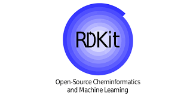
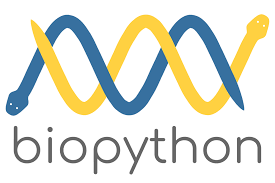
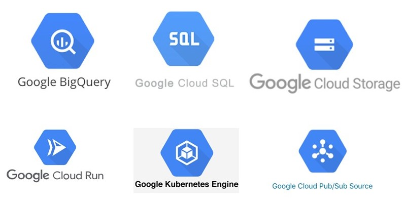
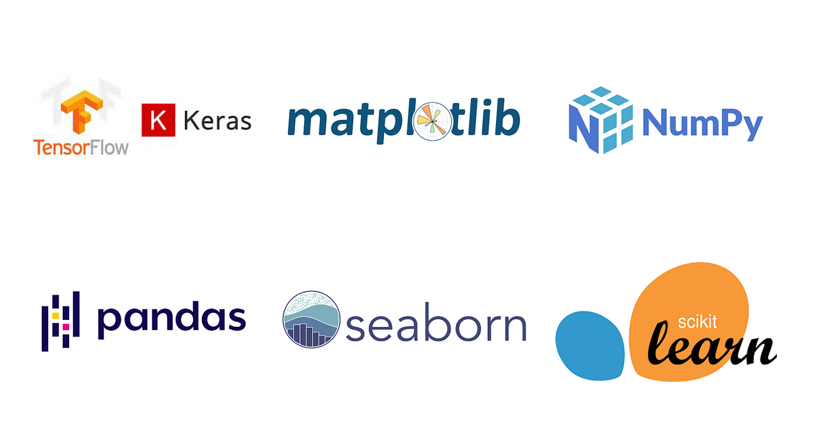
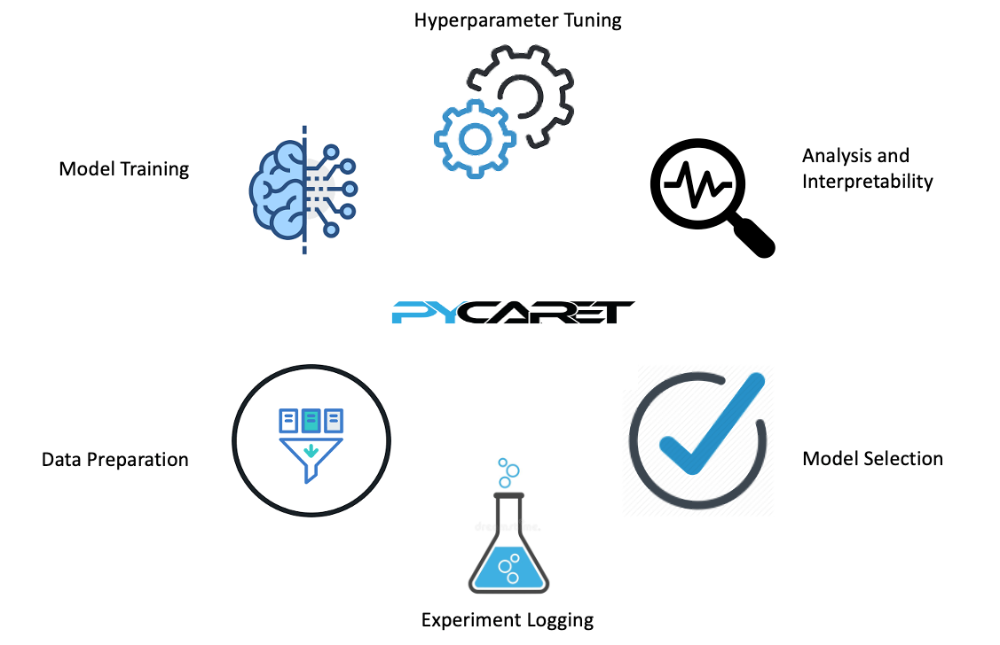
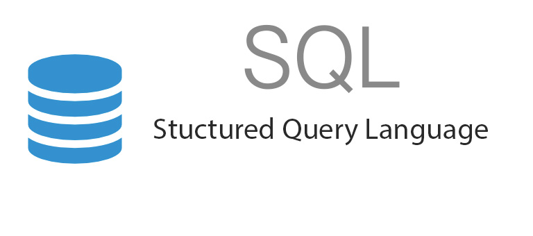
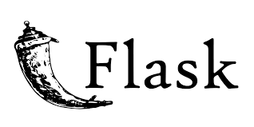
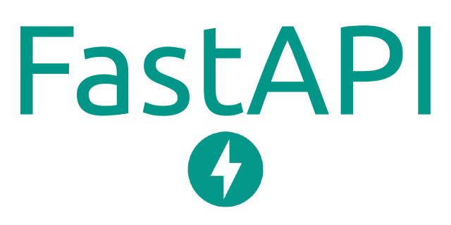
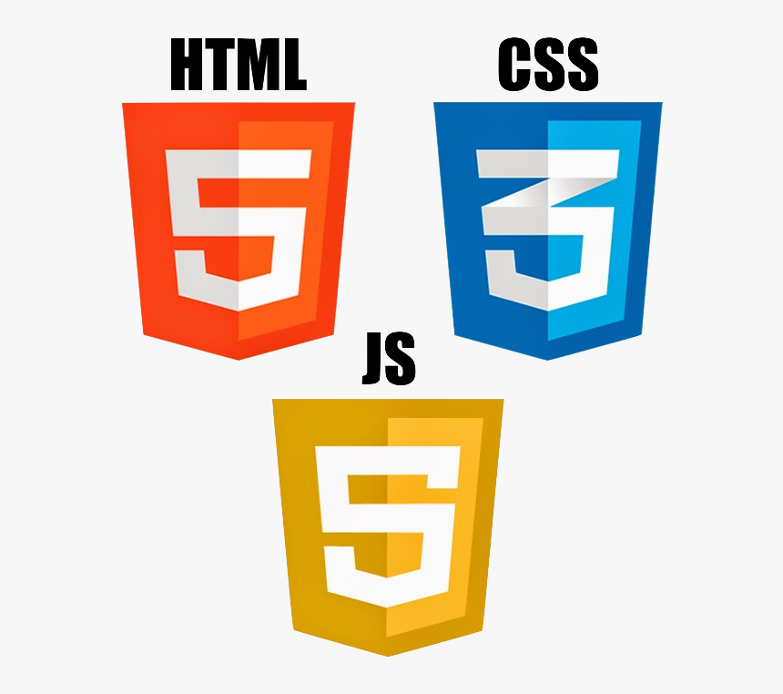

My Stack
Technical Competency
Bioinformatics & Genomics
Nextflow (DSL2)

RDKit
Biopython Neoantigen Prediction HLA Typing Epitope Mapping RNA-seq (DESeq2) WGS Variant (GATK) Single-cell RNA-seq (Scanpy/Seurat)Cloud & Infrastructure

Google Cloud Platform HPC (SLURM / PBS) Docker
Singularity/Apptainer
Git / GitHub
BigQuery & Cloud Run
Cloud SQL & GKE
Docker
Singularity/Apptainer
Git / GitHub
BigQuery & Cloud Run
Cloud SQL & GKE
Data Science & AI

Scikit-Learn
PyCaret PyTorch & TensorFlow Pandas & NumPy Matplotlib & Seaborn RAG / LLM ArchitecturesLanguages & Web Frameworks
Python
R Language

SQL / PostgreSQL
Flask
FastAPI Bash Shell
HTML/CSS/JSExperienced in building drug discovery platforms (PlayMolecule, BoltChem). Familiar with scRNA-seq analyses.